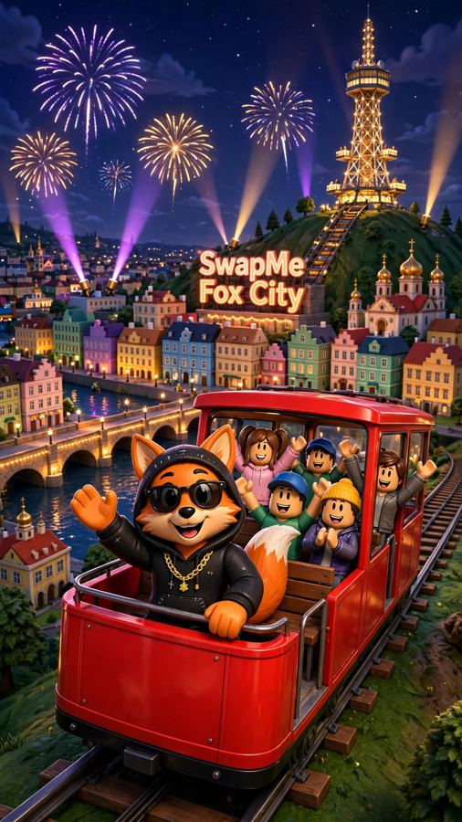
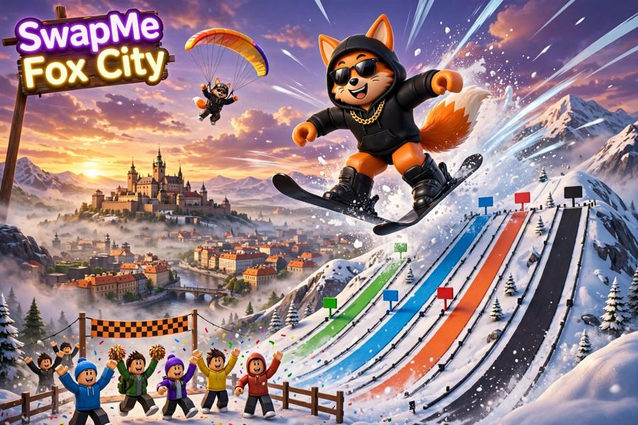

С нуля — к своей будке
Собирай монеты, улучшай своё пространство и узнавай, как работает игровая экономика Свапов.
Гайд по монетам →Исследуй Прагу из кубиков, развивай свой монетный тайкун и зови друзей на городские челленджи в SwapMe Fox City.
Ссылка откроет официальную страницу игры. Доступность проверяется в Roblox.
Тайкун, исследование города и мини-игры. Наличие конкретного режима и обновления смотри на странице Roblox.
Собирай монеты, улучшай своё пространство и узнавай, как работает игровая экономика Свапов.
Гайд по монетам →Ориентиры, трамваи, мосты и места для скриншотов. Город можно исследовать вместе с друзьями.
Маршрут исследователя →Сравни результаты мини-игр, придумай собственные правила и поделись лучшим моментом.
Идеи челленджей →Замок, мосты, трамваи, парк и приключения. Загляни в галерею идей для нашей карты.





Иллюстрации и промо-видео — концептуальные материалы, а не подтверждённые записи игрового процесса.
Никаких регистраций на этом сайте: для игры нужен Roblox. Открой страницу игры и присоединяйся, когда она станет доступна.
Можно просто играть, а можно придумать видео-челлендж и отправить друзьям. Никаких платных заданий и обещаний наград.
Кто найдёт самое красивое место в SwapMe Fox City? 🦊 Покажи свой скриншот и зови друзей!
Выбери друга, придумай челлендж и проверь, кто быстрее освоится в Fox City. 🎮
Снимай честные реакции, городские мини-туры, смешные моменты и совместные испытания. Если хочешь рассказать об игре в своём канале — используй официальный арт и ссылку на Roblox. Не выдавай концепт-арт за реальный геймплей.
Коллаборации только добровольные. Не нужно покупать просмотры, ботов или фальшивые отзывы.
Да, вход бесплатный. Дополнительные косметические предметы могут продаваться за Robux.
Старт был запланирован на 11 ноября 2026 года, 18:00 по Праге. Актуальную доступность проверяй по кнопке «Перейти в Roblox».
Проверь доступность игры через Roblox, войди в игру и воспользуйся официальными функциями друзей Roblox.
Публикуй собственный ролик в соцсетях с тегом #FoxCityChallenge. Ссылку на страницу игры можно взять выше.